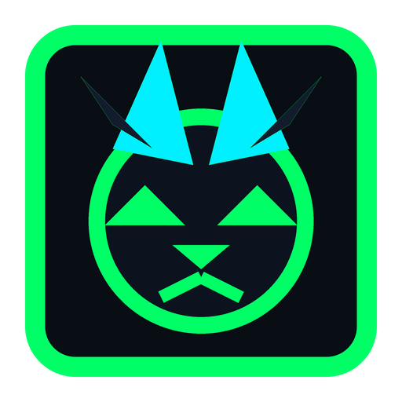

NOTLYNX SHIELD v1.0
Bu logo, telif yazıları ve kaynaklar NotLynx koruması altındadır. İzinsiz kopyalanamaz.
NotLynx Optimizer v1.0; BCDedit saat zamanlayıcıları, TCP Nagle algoritması bypass, GPU MMCSS önceliği, OptimizerDuck stili canlı donanım gösterge paneli ve Windows Denetim Masası entegreli NotLynx Ultimate Power Plan ile sisteminizi e-spor seviyesine taşır.

NOTLYNX // VAŞAK BOYNUZLU LOGO
Sisteminizi Uçuran 10 Profesyonel Modül
NotLynx Optimizer v1.0 içerisinde yer alan doğrulanmış kernel ve donanım modülleri:
BCDedit donanım zamanlayıcı sapmaları ve micro-stutter önlenir, Enhanced TSC ile saat senkronizasyonu kararlı hale getirilir.
bcdedit /set useplatformclock false
Ağ bant genişliği kısıtlamaları kaldırılır, paket trafiği tamamen oyuna ayrılır ve sistem yanıt süresi %100'e çıkarılır.
NetworkThrottlingIndex = 0xFFFFFFFF
Tüm aktif ağ adaptör GUID'lerinde Nagle algoritması devre dışı bırakılır. Paket gecikmesi ve ping sıçramaları sıfırlanır.
TcpAckFrequency = 1 | TCPNoDelay = 1
Kritik çekirdek sürücüler doğrudan fiziksel RAM'de kilitlenir. Disk sayfalama gecikmesi (DPC latency) dramatik ölçüde düşürülür.
DisablePagingExecutive = 1
İşlemci çevrimleri (Short Quanta, 3:1 Boost) ile doğrudan ön planda aktif olan e-spor oyun penceresine tahsis edilir.
Win32PrioritySeparation = 38 (0x26)
Multimedia Tasks (MMCSS) yapılandırılarak GPU Priority 8 seviyesine, SFIO Priority ise High moduna getirilir.
GPU Priority = 8 | Category = High
Windows fare ivmelenmesi tamamen kaldırılır, 1:1 ham donanım girdisi (Raw Input) ile kusursuz e-spor nişan hassasiyeti sağlanır.
MouseSpeed = 0 | RawInput = True
DiagTrack, SysMain (SuperFetch) ve disk yoran WSearch servisleri durdurularak disk ve işlemci darboğazı önlenir.
sc stop DiagTrack & SysMain & WSearch
Arka planda gizli kayıt alan Xbox Game DVR, GameBarPresenceWriter ve ekran yakalama kancaları tamamen kapatılır.
AppCaptureEnabled = 0
Windows Denetim Masası içerisine resmi 'NotLynx Optimizer - Ultimate Power' güç planı oluşturulup atanır. İşlemci çekirdek uyutması (Core Parking) kapatılır ve maksimum saat frekansları kilitlenir.
powercfg -changename <GUID> "NotLynx Optimizer - Ultimate Power"
Canlı v1.0 Script Simülatörü
NotLynx Optimizer v1.0'ın arka planda çalıştırdığı 10 aşamalı çekirdek motorunu doğrudan tarayıcınızda test edin.
NotLynx Optimizer v1.0 [Engine Initialized]
Aşağıdaki butona basarak 10 aşamalı çekirdek optimizasyonunu başlatın...
Şeffaflık, Açık Kaynak & Güvenilirlik
NotLynx Optimizer v1.0, tam şeffaflık ilkeleriyle geliştirilmiştir. Gizli arka plan süreçleri barındırmaz, tamamen kullanıcı kontrolündedir.
Python dilinde yazılmış tüm kaynak kodları GitHub üzerinde inceleyebilir, kendi özelleştirmelerinizi ekleyebilir ve PyInstaller ile kendi .exe dosyanızı güvenle derleyebilirsiniz.
GitHub: samet2007topcu-art →Kayıt defteri ve kernel ayarlarını değiştirebilmek için zorunlu olan Yönetici (UAC) yetkisi `runas-admin` bayrağı ile güvenli bir şekilde talep edilir. 0% zararlı yazılım temizliği.
VirusTotal: Temiz (Verified)Microsoft Windows Developer Documentation, Mark Russinovich Sysinternals Suite (DPC latency guide), BCDedit Technical Reference ve TCP/IP stack optimizasyon standartları.
Win32 API & Microsoft DocsNasıl Çalıştırılır?
NotLynx Optimizer v1.0'ı çalıştırmak sadece 3 basit adımdan oluşur.
Sitemizden veya resmi GitHub sayfamızdan güncel NotLynxOptimizer_GUI.exe dosyasını indirin.
UAC yetkisi talep eden uygulamaya sağ tıklayıp "Yönetici Olarak Çalıştır" seçeneğini seçin.
Gösterge panelini inceleyin, 10 modülü uygulayın ve tam çekirdek aktivasyonu için bilgisayarınızı yeniden başlatın!
OptimizerDuck stili donanım gösterge paneli, 10 modüllü profesyonel kernel optimizasyonu ve derin artık temizleyici şimdi tek çatıda.